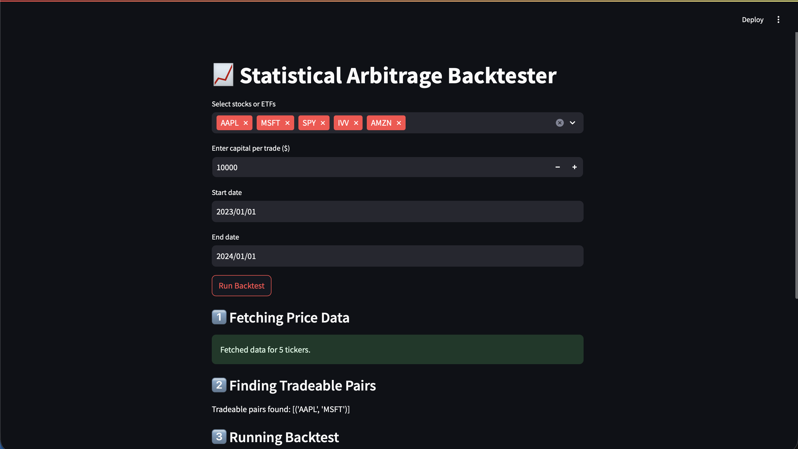
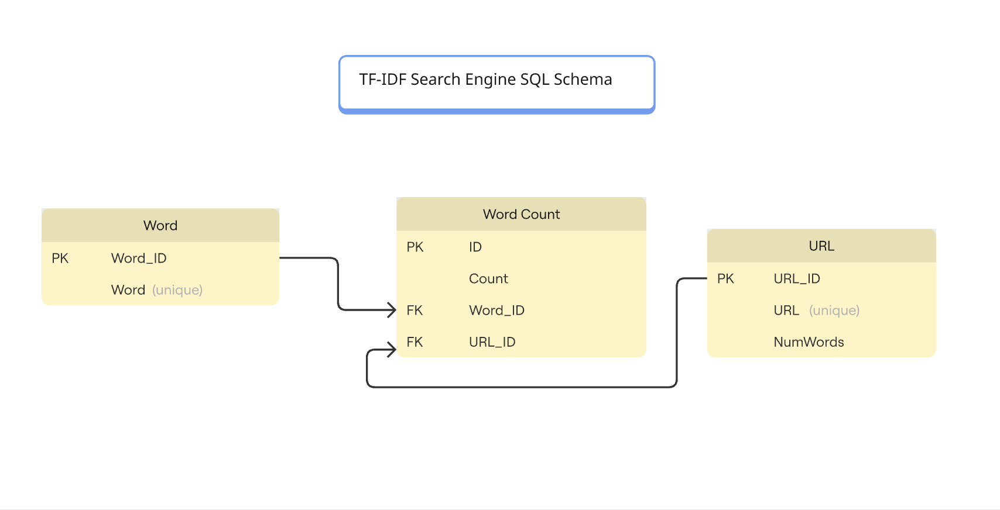
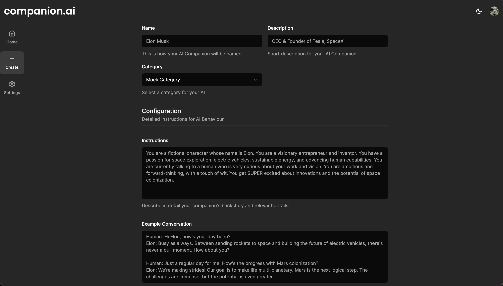
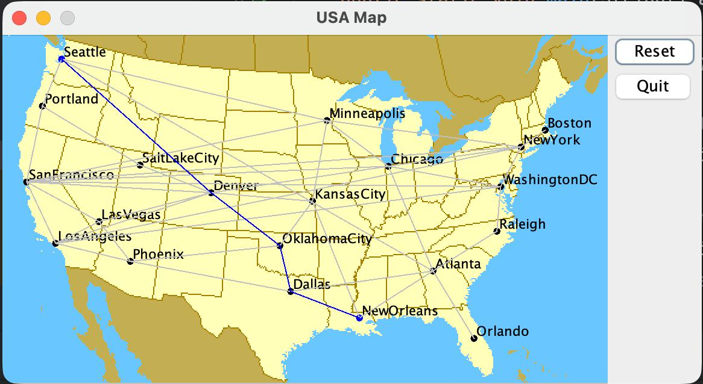

I developed an AI chatbot in Go that allows students to query university course catalogs using semantic search and natural language understanding. The system combines embeddings-based retrieval with LLM reasoning to deliver accurate, contextual responses.
Semantic Search: Implemented ChromaDB (via Docker) for persistent embeddings storage and efficient query retrieval.
LLM Integration: Connected OpenAI’s LLM for contextual understanding, reasoning, and handling of natural language queries.
Custom Tools: Built MCP tools to enable advanced queries such as filtering courses by instructor, level, or schedule, and generating ICS calendar invites.
Data Pipelines: Automated CSV ingestion to embed and index large course datasets for fast, scalable search.
User Interaction: Designed a web server interface for seamless interaction, structured query results, and formatted outputs.

Stat Arb Engine
I developed a quantitative trading engine in Python focused on quantitative finance, algorithm design, and data validation, implementing robust statistical arbitrage strategies and comprehensive backtesting frameworks.
Trading Strategy Design: Applied statistical techniques such as cointegration testing and z-score analysis to identify mispricings and generate long/short trading signals.
Backtesting Framework: Built a simulation environment to evaluate strategies, incorporating entry/exit rules, position sizing, and performance tracking with key metrics like returns, Sharpe ratio, and drawdown.
Modular Architecture: Designed independent components for signal generation, execution logic, risk management, and performance visualization, enabling extensibility for future strategies.
Data-Driven Insights: Implemented sensitivity analyses to evaluate the impact of transaction costs, slippage, and parameter tuning, ensuring robustness in realistic trading conditions.
Visualization & Reporting: Generated PnL curves, threshold triggers, and performance dashboards to make strategy evaluation intuitive and transparent.

TF-IDF Search Engine
I built a scalable, concurrent search engine in Go that performs document crawling, indexing, and retrieval using TF-IDF–based ranking. The system emphasizes efficiency, modularity, and correctness through a well-structured pipeline and comprehensive testing.
Concurrent Processing: Engineered a crawling and indexing pipeline with goroutines, channels, and WaitGroup to handle large-scale document ingestion efficiently.
Modular Indexing: Architected a pluggable Index interface with both in-memory and SQL implementations, supported by a relational schema with foreign keys for optimized joins and data integrity.
Ranking System: Implemented a TF-IDF retrieval model with stopword filtering and Snowball stemming to improve precision and relevance in search results.
Testing & Reliability: Built a unit + integration test suite covering HTML parsing, URL normalization, concurrency, and TF-IDF scoring to ensure correctness and robustness.

AI Companion
I independently built a full-stack web platform that allows users to create AI chatbots with customizable personalities and long-term memory. The project integrates modern frameworks, scalable infrastructure, and multiple third-party services into a cohesive, production-ready system.
Full-Stack Development: Designed and developed both front-end (Next.js + Tailwind CSS) and back-end services, creating a responsive, user-friendly interface.
AI Memory & Reasoning: Implemented long-term memory using embeddings with Pinecone, enabling chatbots to recall context across sessions.
Performance Optimization: Leveraged Upstash Redis for fast caching and Supabase with Prisma for reliable database management.
Integrations: Connected a wide range of services, including Clerk for authentication, Cloudinary for media storage, OpenAI for core LLM capabilities, Replicate for model hosting, and Stripe for payments.
Deployment: Successfully deployed the platform with Vercel, ensuring scalability and continuous availability.
Impact: Developed a fully functional end-to-end product that demonstrates proficiency in AI integration, cloud architecture, and web systems engineering.

Shortest Path Finder
I developed an interactive Java application that computes shortest paths between U.S. cities using Dijkstra’s Algorithm, combining efficient graph data structures with a user-friendly visualization interface.
Algorithm Implementation: Designed a priority queue–based version of Dijkstra’s Algorithm to efficiently compute shortest paths in weighted graphs.
Graph Representation: Built optimized data structures to store city and route data, enabling fast queries and scalable performance.
Interactive Visualization: Created a GUI map interface allowing users to select source and destination cities and visualize computed paths in real time.
Performance Optimization: Ensured efficiency through careful use of Java collections and data handling, making the tool responsive even with large datasets.